Optimizing and Characterizing High-Throughput Low-Latency LLM Inference in MLCEngine
In June, our research group released MLCEngine, a universal LLM deployment engine powered by machine learning compilation. MLCEngine is a single engine to enable LLM deployment across both cloud and edge devices, with full support for OpenAI API.
Performance has been one of the key driving factors of our development. Over the past few months, we have been working hard to improve the inference performance of server settings. This post shares our results and learnings through the process. Specifically, we focus on the high-throughput low-latency LLM inference problem. In this blogpost, we will introduce and discuss:
- LLM inference background and the high-throughput low-latency LLM inference problem.
- Throughput-latency tradeoff benchmark of state-of-the-art LLM engines. MLCEngine achieves state-of-the-art performance on low-latency inference settings.
- Tradeoffs of tensor parallelism and data parallelism. Higher tensor parallelism degree is preferred for extreme low-latency requirements, and data parallelism can suffice for weaker latency requirements.
- Impacts of speculative decoding. Speculative decoding can reduce latency by more than 25% in low-latency LLM inference.
Background: LLM Inference
In recent years, large language models (LLMs) have emerged as highly sophisticated transformer-based machine learning models that are capable of generating high-quality text. Trained with billions of parameters, LLMs power applications ranging from conversational AI to content creation, and can potentially change everyone’s life.
LLM inference typically includes two main stages: the prefill phase and the decode phase. In the prefill phase, the model processes the initial input text and generates a first output token. Following this, the decode phase begins, where tokens are generated one-by-one in an auto-regressive decoding manner, and each new token is generated based on the previously generated tokens.
An important component of an LLM inference engine is the KV (key-value) cache. During decoding, the model stores intermediate key/value data of all tokens in this cache. By reusing these key/value data, the model can avoid redundant calculations and thereby significantly reduces computation during the decode phase.
Tensor parallelism is often employed to deploy a model on multiple GPUs. This approach splits the model’s weights across all GPUs, allowing parts of each layer to run simultaneously on different devices. Tensor parallelism distributes the computational load and memory requirements, making it possible to run LLM inference on larger models without overwhelming single GPUs.
Speculative decoding is an optimization technique aimed at speeding up the auto-regressive generation of tokens. By predicting and generating multiple tokens at once rather than strictly one at a time, speculative decoding reduces latency and accelerates inference.
Our Focus: Low-Latency LLM Inference
This post specifically focuses on the high-throughput low-latency LLM inference problem, where we prioritize getting low latency, and want to achieve high throughput conditioned on the low latency goal.
While many performance improvements focus on throughput-oriented settings (where LLM engines process very heavy workloads, and request preemption and fine-grained request scheduling are more involved), latency has become increasingly important for LLM engines. We are particularly interested in scenarios where each user can get more than 50 tok/sec, 100 tok/sec or even higher, while maintaining reasonable request concurrency (batch size) for higher throughput without request preemption (unlike throughput-oriented settings). Additionally, we are interested in looking at the throughput-latency tradeoffs as we vary the request concurrency, providing users with more flexible choices in picking the setup that works best for them.
In the remainder of the post, we first evaluate the latency and throughput of MLCEngine on Llama3 models. We will then move on to a deeper analysis of the impact of different inference settings, such as tensor parallelism and speculative decoding, on high-performance, low-latency inference.
Our results on H100 show that MLCEngine achieves state-of-the-art performance on low-latency inference settings on multiple latency constraint thresholds. We will also provide a characterization of different inference system setup tradeoffs for the low-latency inference scenario.
Benchmark Setup
The evaluation in this blogpost is done with Llama3 8B fp16 and 70B fp8 on a node with NVIDIA H100 SXM GPUs. We use the ShareGPT dataset to construct request inputs and set the output length. In the evaluation, we fix the number of concurrent requests to be 1/4/8/10/16/20/30/64 and send 500 requests in total. We measure the TPOT (time per output token, the average number of tokens received per second after the first token is received) of each request and the overall engine output token throughput. We include more results and discussions in the appendix, for topics about the fixing of request rate, TTFT (time to first token), 90th percentile performance, and other input/output lengths. Instructions for reproducing the benchmark results are also provided in the appendix.
To get a sense of how MLCEngine compares with current state-of-the-art solutions, we compared with SGLang (v0.3.1.post2) and vLLM (v0.6.1.post2). The space of LLM inference is evolving fast so we also anticipate the frameworks to improve over time. We will spend part of the blog discussing lessons learnt that could benefit the broader ML systems community.
Benchmark Throughput and Latency Trade-Off
We begin with the basic results of the Llama3 8B fp16 model on 1 GPU and the 70B fp8 model on 4 GPUs with tensor parallelism. The figures below show the TPOT (time per output token) and per-GPU output token throughput under different numbers of concurrent requests. We normalize the throughput by the number of GPUs, as we can always add GPU replicas to scale the overall throughput. These figures don’t include the additional optimizations (e.g., speculative decoding) that are discussed later, and all the data points are collected with the same API endpoint with no special configuration tuning.
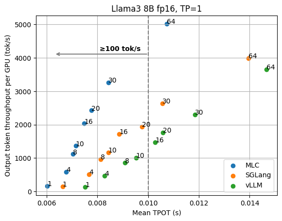 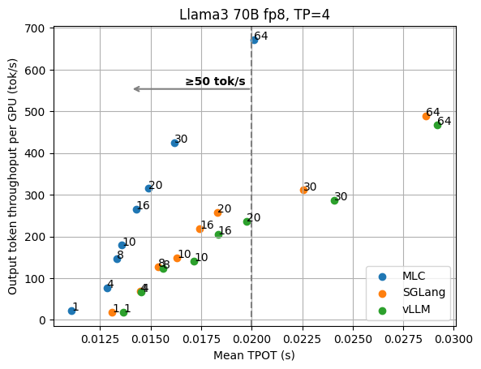
We can clearly see the tradeoff between latency and output throughput from the figures. In a throughput-oriented setting, we usually pay attention to the upper right side of the plots, as the request concurrency grows up, LLM engines can achieve higher throughput as concurrent requests are batched together for processing, in which case the latency of a single request may suffer from engine request scheduling such as preemption.
When we have a low-latency goal (say we would like to have output tokens to be better than 100 tok/sec) in mind, however, we need to instead look at the upper left side of the plots that fit into the latency target. For example, in order to maintain 100 tok/s latency for Llama3 8B, MLCEngine can maintain about 30 concurrent users, and get 3000 tok/s overall throughput. Overall, we find MLCEngine can achieve state-of-the-art performance on the low-latency inference settings and continue to be effective as we scale to larger workloads. In the upcoming subsection, we will discuss the techniques behind the scheme.
How do we achieve low latency?
There are various factors contributing to the low latency of MLCEngine, and we are happy to share the lessons we’ve learnt with the community.
Fast decode attention. The computation time proportion of attention in the LLM inference decoding stage varies depending on the context length, from less than 20% in short contexts of about 100 tokens to more than 50% in long contexts of thousands of tokens. MLC integrates the state-of-the-art attention library FlashInfer for serving to reduce the attention overhead.
Compiler-driven kernel generation and dispatch. As a compiler-based solution, MLCEngine supports leveraging GPU kernels from different sources. For example, we dispatch GeMM (General Matrix Multiply) operators to cuBLAS or CUTLASS kernels for large request concurrency, while using the compiler-generated efficient GeMV kernels (which is 5-10x faster then the cuBLAS kernel) for the request concurrency of 1 and low request concurrency.
Dynamic shape-aware memory planning and CUDA Graph. MLC supports a dynamic shape-aware memory planning compiler pass that can help statically allocate the required GPU memory and thus avoid any runtime memory allocation/deallocation during inference. We have CUDA Graph rewrite compiler pass that further allows us to leverage CUDA Graph and reduce GPU kernel launch overhead. We find that CUDA Graph is especially important for multi-GPU use cases to reduce the variability, and can contribute to up to 10% of latency reduction in multi-GPU inference.
CPU overhead reduction. MLC employs lots of effort to reduce the CPU overhead between consecutive rounds of decoding. Importantly, we drive the engine loop with a standalone thread and leave all other frontend request processes (e.g., tokenizer encode/decode, asynchronous HTTP receive/send, etc.) on the other thread. This architecture allows for the asynchronous processing of request output and engine GPU computation. Together with other CPU-side optimizations, the CPU overhead counts towards about 3% of batch decoding time.
Impacts of Tensor Parallelism
Data parallelism and tensor parallelism are two common approaches to scale LLM inference to more GPUs. Data parallelism duplicates the model on the extra set of GPUs, doubles the overall system throughput, and keeps the output latency unchanged. While tensor parallelism employs the extra GPUs to collectively serve the model, reduces serving latency but sacrifices some throughput. To understand the impacts of tensor parallelism in different scenarios, we evaluate MLCEngine in different TP settings. The y-axis is normalized by the number of GPUs so we can effectively compare the throughput latency tradeoff of higher TP setting and lower TP setting.
Figures below show the evaluation results of Llama3 8B fp16 on 1/2 GPUs and Llama3 70B fp8 on 4/8 GPUs.
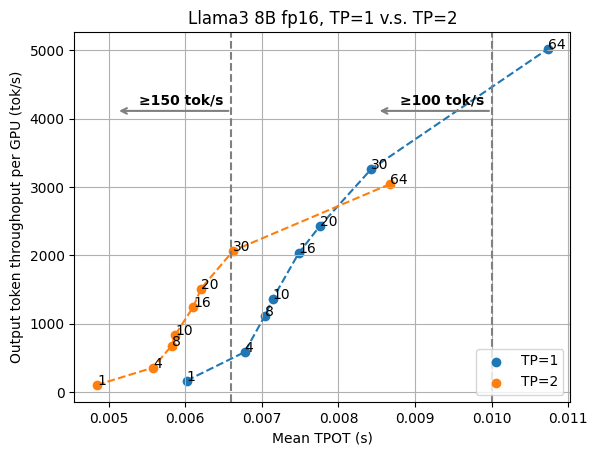 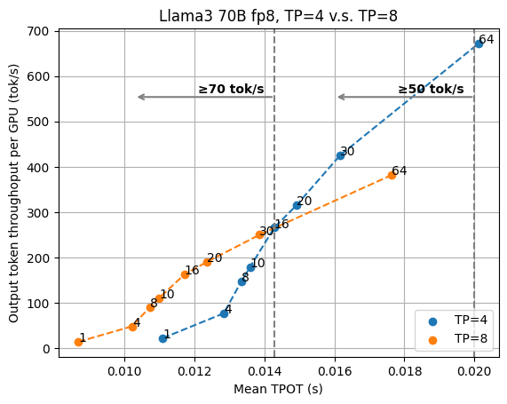
In both figures, we can see a crossover point between the curves of two TP settings. This means that the configuration choice varies across our latency goals, because we always prefer a higher throughput as long as the fixed latency goal is satisfied. According to the figures, we would want to keep higher TP to enable low-latency serving and rely on data parallelism (and a smaller TP number) when the task is not as latency-sensitive.
For the Llama3 8B case, if we would like to ensure the 100 tok/sec latency goal, we can find that the 30 request concurrency point of TP=1 is slightly higher than the concurrency of 64 under TP=2. However, as we aim for even lower latency, TP=2 becomes more preferable. For example, if we further pick the latency threshold to TPOT of 7ms (equivalent to the output speed of 143 tok/s), for TP=2 we can pick request concurrency 30, but for TP=1 we can only pick the request concurrency 8, with 45% lower output throughput.
For Llama3 70B fp8, the crossover point of TP=4 and TP=8 is different.
This study shows a complicated interaction when we pick tensor parallelism versus data parallelism with different latency and throughput targets, and we need to systematically look at the latency throughput tradeoff when deciding the best deployment configuration.
Impacts of Speculative Decoding
Speculative decoding is a very useful technique in LLM inference to reduce the overall latency. Speculative decoding leverages a smaller draft model (or combining draft proposal head into the model) to propose multiple tokens and makes the target model verify a whole draft one at a time, to benefit from the batching effects of LLM inference. One can think of speculative decoding as an approach to increase the effective batch size per concurrent user. Most of the speculative decoding study so far has been focused on processing a single sequence, while concurrency is still important in server settings as we would want to get reasonable throughput.
We combine speculative decoding with the high-performance serving solution and study the impact of speculative decoding through the Llama3 70B fp8 speculative decoding results with the draft model Llama3 8B fp8 and draft length 3 (so that the effective length is 4 per verification step) for TP=4 and TP=8, and compare the results with normal batch decoding.
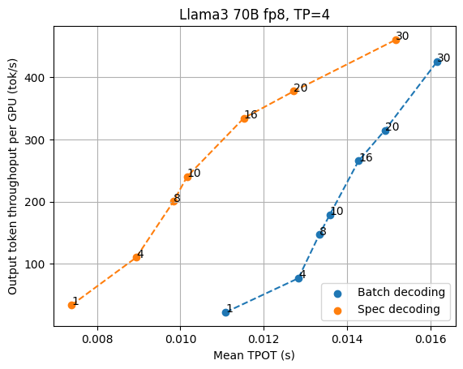 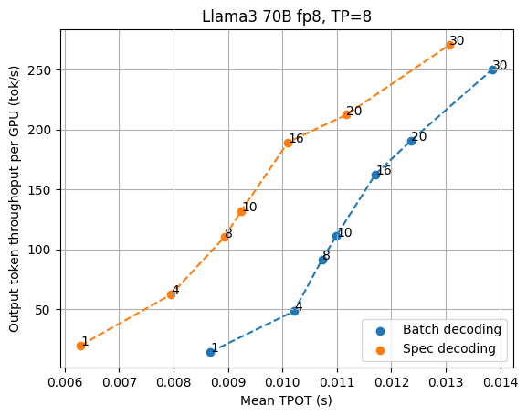
As shown in the figures above, speculative decoding consistently brings lower latency when we look at low latency settings, especially when we want the output speed to go beyond 70 tok/s. In the current benchmarking scenario, TP=4 offers better throughput tradeoffs per GPU, while TP=8 offers the lowest latency possible. As the request concurrency grows larger, the normal batch decoding gradually shifts from memory bound to compute bound, marginalizing the benefit of speculative decoding.
It is worth noting that the benefit of speculative decoding also depends on the acceptance rate of speculation, which may vary across different datasets.
Efficient Speculative Decoding System with Continuous Batching. It is worthwhile noting that we need to deal with compound system complexity when combining speculative decoding together with continuous batching. The LLM engine overhead reduction becomes extremely important as the draft model is still running in a tight loop and can take a strong hit from the engine overhead. We also need to carefully manage the draft logits and avoid dynamic memory allocation when possible. Finally, we need to build a specialized kernel to verify all the batched proposals at once without turning back to the CPU.
Discussion and Future Opportunities
In this blogpost, we study the tradeoffs of LLM inference in high-throughput low-latency scenarios. It is important to note that we did not yet cover other advanced features in MLCEngine, such as prefix caching (affecting common system prompts), structured constraint overhead (for JSON schema generation), and advanced speculation methods such as Eagle and Medusa. The compounding effects of these elements can depend on the scenarios we are looking at as well as the effectiveness of the corresponding system solutions. We will leave these studies in future posts in the MLC community.
Appendix
Fixing the request rate
The evaluation so far focuses on fixing the request concurrency, which precisely reveals the underlying LLM engine performance on various workload heaviness. Fixing the request rate is another common benchmark workload. When running LLM engines with a fixed request rate, the underlying batch size of the engines varies over time. Benchmarking with fixed request rates provides more comprehensive results compared to fixing request concurrency, which is more granular. The figures below show the results under different fixed request rates (1/2/4/8/16), where MLCEngine delivers the state-of-the-art aligned latency.
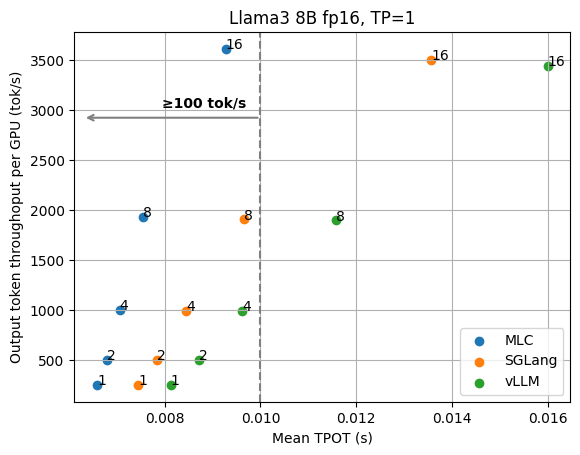 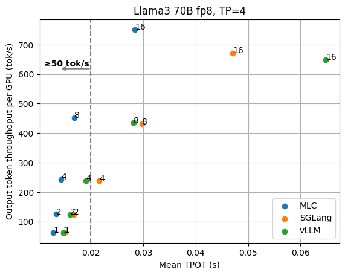
Time to first token
TTFT (time to first token) is an important metric in LLM inference. It refers to the time in seconds between sending a request to the API and receiving the first token of the response. Usually, the TTFT metric reveals the efficiency of request scheduling and input prefilling of an LLM engine. The figures below show the measured average TTFT under different request concurrency for the Llama3 8B fp16 and 70B fp8 models. MLCEngine has comparable aligned TTFT in general across various request concurrency.
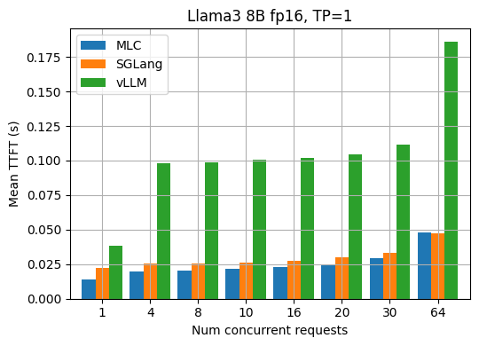 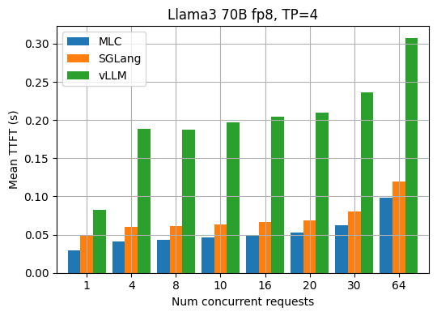
90th percentile performance
The tail performance (TPOT, TTFT) is also an important metric that people care about, in addition to the average performance. The two figures below show the p90 TPOT and TTFT results for Llama3 70B fp8 under different request concurrency.
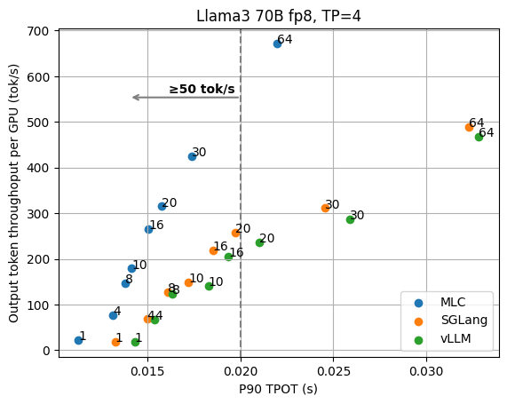 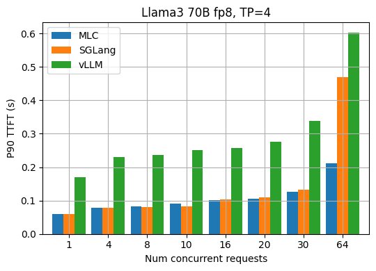
The two figures below show the p90 TPOT and TTFT under different fixed request rates.
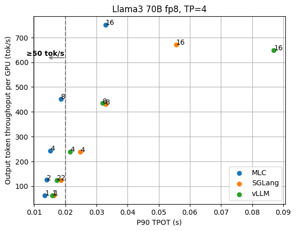 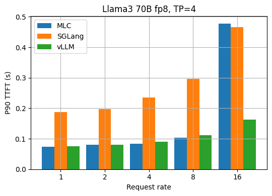
Different input/output lengths
In addition to reusing the input and output lengths from the ShareGPT dataset, we also evaluate LLM engines with other fixed input/output lengths. The two figures below show the TPOT and TTFT results when each request has a fixed input length of 100 and an output length of 500 for Llama3 70B fp8.
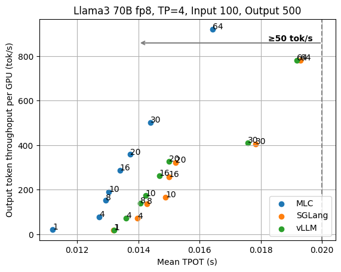 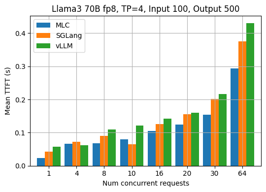
The two figures below show the results for the fixed input length of 1000 and output length of 500.
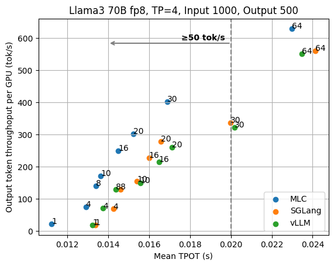 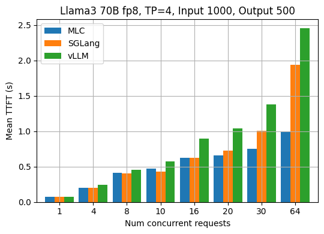